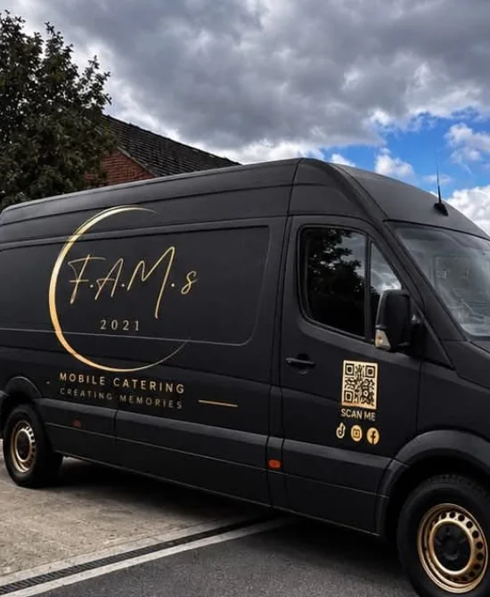

Freshly prepared food
We believe food is at its best when it’s cooked fresh and served with care.
Family-run mobile catering · Surrey & beyond
Family-run mobile catering for weddings, private parties, corporate events and special occasions across Surrey and beyond.

About FAMs
FAMs was created by Florin, Alexandra, Mirela and Sofia — built around family, food and a genuine love of bringing people together.
From the moment we arrive to the last plate served, we focus on quality food, friendly service and the details that make an event feel cared for.
Meet the family →Catering for your occasion
From intimate birthdays to beautiful weddings and busy corporate events, we’ll work with you to create a catering experience that feels right for the day.
Relaxed, thoughtful mobile catering that becomes part of your celebration.
ExploreBirthdays, anniversaries and gatherings with food prepared fresh for your guests.
ExploreWarm, organised catering for teams, clients and company occasions.
ExploreA flexible catering experience shaped around your venue, guests and occasion.
ExploreMore than catering
Why FAMs?
Great catering should be more than simply feeding your guests. It should become part of the experience.
We believe food is at its best when it’s cooked fresh and served with care.
You’re dealing directly with the family behind FAMs — not a faceless catering company.
We shape the menu and service around your guests, venue and occasion.
We want the food, service and atmosphere to become part of what your guests remember.
From enquiry to event
Share the date, location, guest numbers and what you have in mind.
We discuss a menu and style of service that suits the occasion.
Fresh food, warm service and attention to the details around it.
Spend your time with your guests while we take care of the catering.
Questions, answered
A few useful answers before you send your enquiry.
See all FAQs →FAMs caters for weddings, private celebrations, birthdays, anniversaries, corporate events, parties and other special occasions.
Surrey is our primary service area. We can also discuss events in surrounding areas and further afield by arrangement.
Yes. Every event is different, so we’ll discuss your guest numbers, venue, timings and the kind of experience you want, then shape the menu and service around the occasion.
Tell us about dietary requirements when you enquire. We’ll discuss suitable options with you before the event. If an allergy is involved, please give us full details so we can explain what can be safely offered.
Your event, our family
Good food. Great people. Lasting memories.
Get a quote